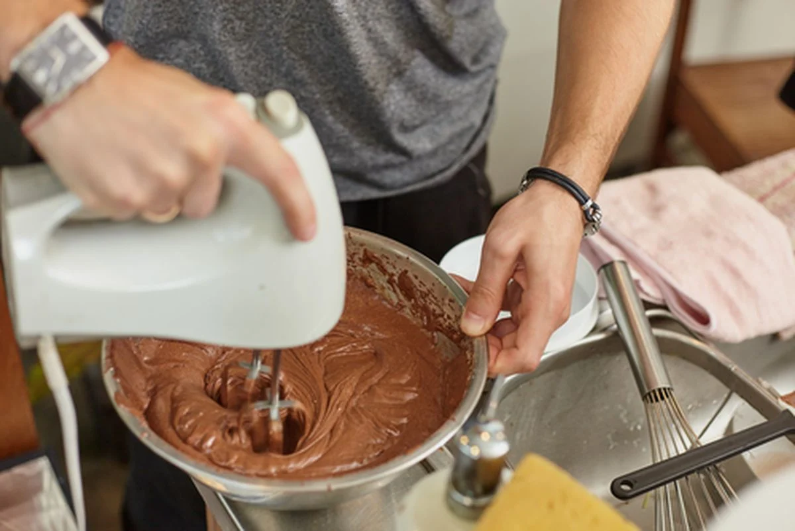
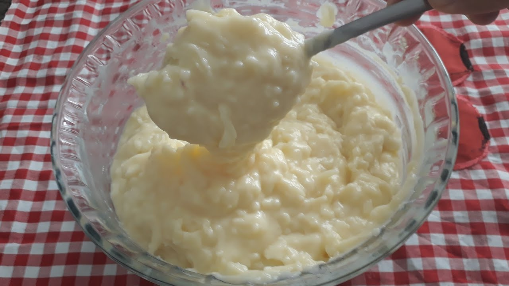

Receitas nostlgicas
Bolo de prestigio

Utensílios necessários para fazer está receita:
- 1 Forno
- 1 Batedeira
- 2 Panelas
- 1 Forma grande
- 1 Vasilha
- 1 Espatula
ingredientes:
- 500ml de leite
- 250g de farinha de trigo
- 100g lata de achocolatado
- 4 ovos inteiros
- 10g de fermento
- 150g de coco ralado
- 3 caixas de leito condensado
- 1 lata de creme de leite
- 100g de granulado (opicional)
- 200g de manteiga
- 1 pacote de coco ralado
- 2 caixas de leite condensado
- 7 colheres de açucar
MODO DE PREPARO:
| Massa |
| 1. Bata as gemas com o açúcar. |
| 2. Junte os demais ingredientes sendo por último as claras e o fermento. |
| 3. Leve ao forno pre aquecido a 180 graus por 30 minutos ou até fazer o teste do palito e o mesmo sair limpo |

| Recheio |
| 4. Misture tudo, leve ao fogo para ferver. |
| 5. Deixe secar um pouco. |

| Cobertura e finalização |
| 6. Bata bem os ingredientes e coloque no bolo frio. |
| 7. Salpique chocolate granulado ou coco ralado e leve para gelar |
| 8. Corte o bolo ao meio, coloque o recheio, depois feche a tampa do bolo e coloque a cobertura por cima! |